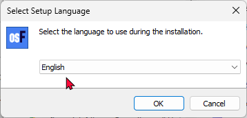
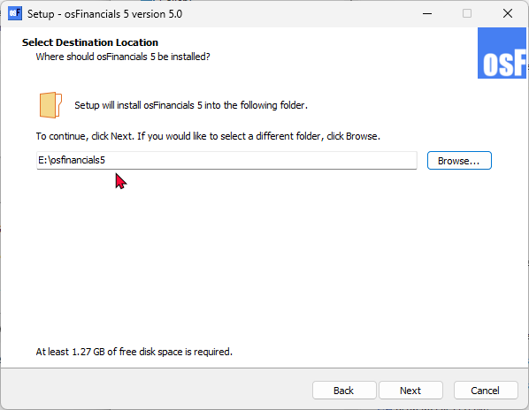
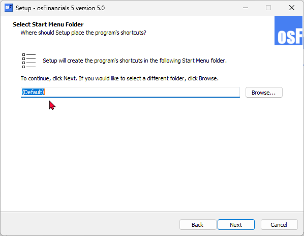
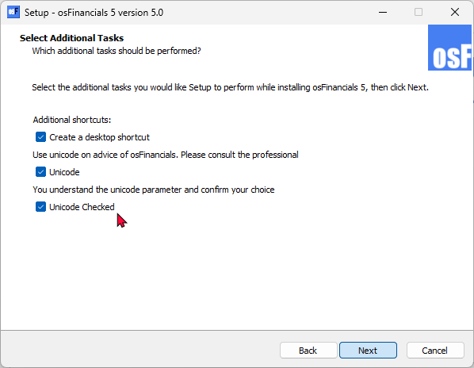
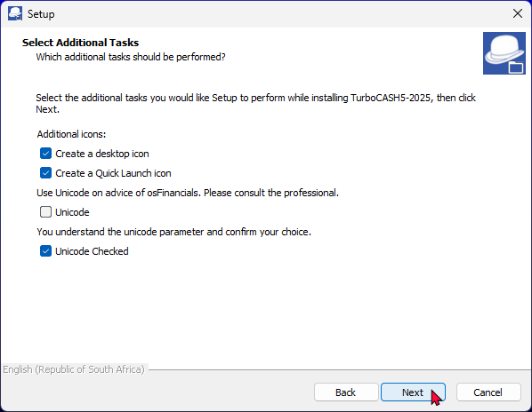
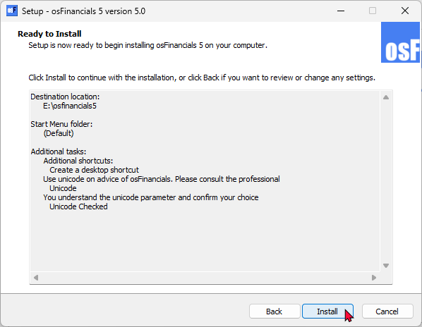
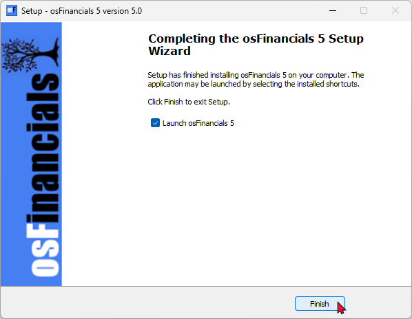

Install osFinancials5 - Single user
Install osFinancials - Added Unicode Setting
We've adjusted the installation script to include a new Unicode setting for Unicode databases. This setting allows you to control the nounicode parameter in the osf.ini file during installation. Additionally, we've added options to update or retain the existing osf.ini file based on your Unicode preferences for your Unicode databases. This allows you to set the Unicode settings via the installation process without editing the osf.ini file in the osFinancials5 installation's root directory.
Unicode Settings in osFinancials5/TurboCASH5
In osFinancials5, the osf.ini (or in TurboCASH the tcash.ini file) includes the setting nounicode=FALSE or nounicode=TRUE to control Unicode settings. Here's what these settings mean:
- Enable Unicode support: nounicode=FALSE: This setting enables Unicode support. When Unicode is enabled, the software can handle a wide range of characters from different languages, ensuring proper display and processing of multilingual text.
- Disable Unicode support: nounicode=TRUE: This setting disables Unicode support. When Unicode is disabled, the software may not correctly handle special characters or characters from languages other than the default one.
Enabling Unicode (nounicode=FALSE) is generally recommended if you need to work with multiple languages or special characters to ensure data integrity and proper functionality.
Unicode Settings for Older Databases
For existing users with Firebird Databases version 10.1, the new Firebird databases are upgraded to version 11.1 as part of the 2025 installs for osFinancials5.1 and TurboCASH5-3. This upgrade is mandatory and should be carefully considered, especially for users with older databases.
Default Setting:
To ensure the safest option for users with older databases, we recommend setting the Unicode option to "checked" by default. However, it's crucial that users confirm their choice to avoid any unintended changes.
Installation Options:
During the osFinancials installation, you will see the following tick-boxes:
- Unicode Tick Box - Confirmation:
By checking the Unicode box, you acknowledge that you understand the unicode parameter and confirm your choice. This step is designed to prevent any accidental changes without proper consideration. If you leave this checkbox unticked and the select the Unicode checkbox ticked, the Unicode setting will be set as true in the osf.ini file:
nounicode=true
- Unicode Checked - If this checkbox is not selected, a Runtime error message is displayed:
"Please check and confirm your unicode option."
If you need to check both the Unicode and Unicode Check tick-boxes, the Unicode setting will be set as false in the osf.ini file:
nounicode=false
We strongly advise consulting with a professional before enabling the Unicode setting. This ensures that you fully understand the implications and make an informed decision.
Single user installation
|
|
|

To Install osFinancials5 Single-user:
- Once the osFinancials5 installation file is downloaded, select the file and open it. The "Select Setup Language" screen is displayed:

|
|
The default installation language is set to English. "Nederlands" language is also available to launch the osFinancials5 install option. |
- Select "English" and click OK. The "License Agreement" screen will be displayed.
- Please read the agreement carefully. If you agree with the terms and conditions of the licence agreement, select the “I accept the agreement” option and click Next. The "Select Destination Location" screen is displayed:

|
|
The default path is C:/osFinancials5 on your system's default drive. You may click on the Browse button to select any other folder than the default path where you wish to install osFinancials5 on the "Browse for Folder" screen. If you need to install osFinancials5 on a device with a small default system drive (e.g. 32GB solid state drive), it is recommended to select a larger drive on your system. |

|
|
DO NOT Install in PROGRAM (Program Files, Program Files (x86) or Program Data) folders. If osFinancials5 is installed into the Programs directories (folders) (i.e. Program Files, Program Files (x86) or Program Data folders), it may not run properly. It may cause issues to launch osFinancials5, connection and performance issues with Firebird and FlameRobin, etc. The Program directories is a protected directories of the Windows system. |

- Once finished, click Next. The "Select Start Menu Folder" screen is displayed:

- The default option is "(Default)". You may select or specify a different folder.
- Once finished, click Next. The "Select Additional Tasks" screen is displayed:

- By default, the "Select Additional Tasks" options is not selected. The options is as follows:
- Additional shortcuts: Select the "Create a desktop shortcut", if you wish to add the osFinancials5 icon on your desktop, from where you may start or launch the osFinancials5 program.
- Unicode settings: - Select both the "Unicode" and "Unicode Checked" options. This will enable Unicode support.
|
|
We strongly advise consulting with a professional before enabling the Unicode setting. This ensures that you fully understand the implications and make an informed decision. |

|
|
Unicode Checked - If this mandatory checkbox is not selected, a Runtime error message is displayed: "Please check and confirm your unicode option." |
|
|
To enable Unicode support (recommended for most users), both the “Unicode” and “Unicode Checked” tick boxes need to be selected. This option will set the nounicode=FALSE parameter in the osf.ini file. This is a very important setting, as this will determine the display of special characters in the osFinancials interface, reports document layout files, etc. in most databases. |
|
|
To Disable Unicode support option, the “Unicode” check box must not be selected. Only the “Unicode Checked” tick box need to be selected. This setting is intended for users who require non-Unicode support. This option will set the nounicode=TRUE parameter in the osf.ini file.  Using this setting, (Disable Unicode), the system relies on specific codepages to handle text. Some examples would be:
In osFinancials5, the codepage can be set in the Tools → Customise language on the Setup ribbon. |
|
|
If your Unicode settings, is incorrect, you may re-run the installation process. Alternatively, you may locate the osf.ini file in the osfinancials5 installation directory and edit the nounicode=true and set it to nounicode=false, and vice versa. In this case you may need to close and restart osfinancials5. |
- Once finished, click Next. The "Ready to Install" screen is displayed:

- Please check the settings.
|
|
This is your last chance to change anything to be installed. If you are not satisfied with your selection, click on the Back buttons to change the Installation directory, or the Start menu folder or select / deselect the necessary options. |
- Click on the Install button. The osFinancials5 installation process will start.
|
|
Overwrite confirmation message: A confirmation message will be displayed if you have installed osFinancials5 over an existing (previous) osFinancials5 installation. You then need to choose the following actions:
|
- Once the osFinancials5 installation process is finished, the "Completing the osFinancials 5 Setup Wizard" screen is displayed:

- Please select or deselect (remove the tick) to Launch osFinancials 5 - If this option is selected (ticked), the osFinancials5 program will automatically be launched, when you click on the Finish button.
- Once finished selecting or deselecting the necessary options, click on the Finish button. The osFinancials5 program will be started if you did not remove (deselect) the tick on the "Launch osFinancials 5" option.
- After launching osFinancials, after installation, the "Set of Books" screen will be displayed.
|
|
Every time an unregistered version of osFinancials5 is started, the following confirmation message will be displayed: This software is limited to 500 transactions or 500 documents. Please register and buy a licence for osFinancials5! Unregistered versions will allow you to process up to 500 transactions and /or documents. Once this limit is reached, osFinancials5 will not allow any processing of transactions, in batches and/or documents. Once you have registered osFinancials5, you will receive an unlocking code and will be able to process further transactions and or documents. |
|
|
After installing osFinancials5, the following optional additional components, is included in the “installs” folder of the osFinancials5 root installation directory:
|
After installing osFinancials5.1 in a new directory - manually migrate your existing data from previous versions
After installing osFinancials5.1 in a new directory, you'll need to manually migrate your existing data from previous versions (osFinancials4, osFinancials5, The following data should be migrated:
- Set of Books: You have several options:
- Copy: Using File Explorer, copy your Set of Books from the "books" folder of your older osFinncials installation to the "books" folder of your new osFinancials5.1 installation.
- Save as: Use the "Save as" option on the Start ribbon within your older osFinancials version and select the "books" folder within your new osFinancials5.1 installation directory (e.g., osFinancials5-1/books).
- Backup/Restore: Create a backup of your Set of Books in the older osFinancials5 version. Then, restore this backup in the "books" directory of your osFinancials5.1 installation.
- Custom Document Layout Files: Copy any custom document layout files to the following directory in your osFinancials5.1 installation:
/plug_ins/reports/DOCUMENTS/DOCUMENTS/
- Custom Reports: Copy any custom reports from your older osFinancials5 version to the "User reports" menu directory in your osFinancials5.1 installation:
/plug_ins/reports/userreports
Important Note: This migration process is required because osFinancials5.1 are not updates to previous versions; is entirely a new installation.